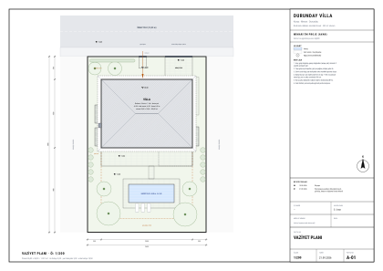
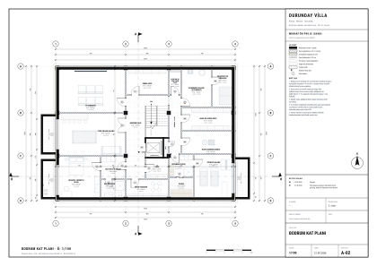
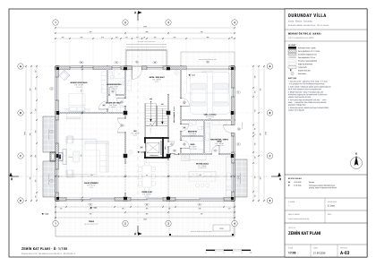
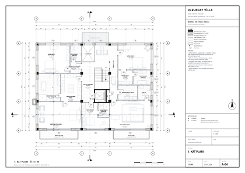
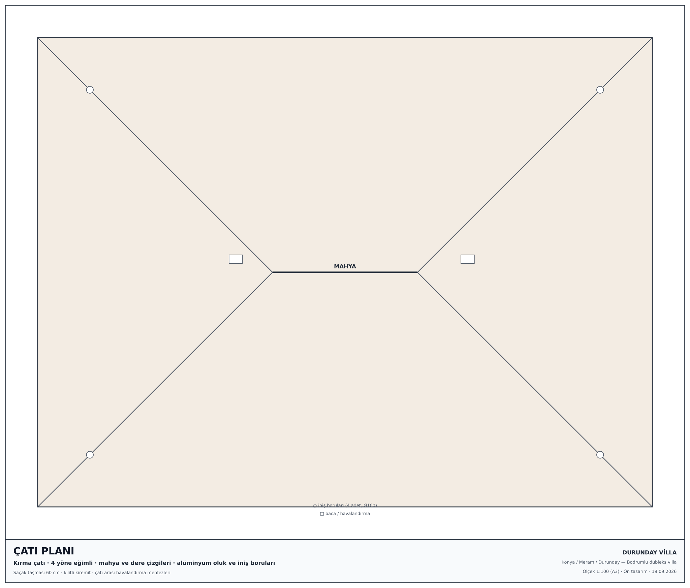
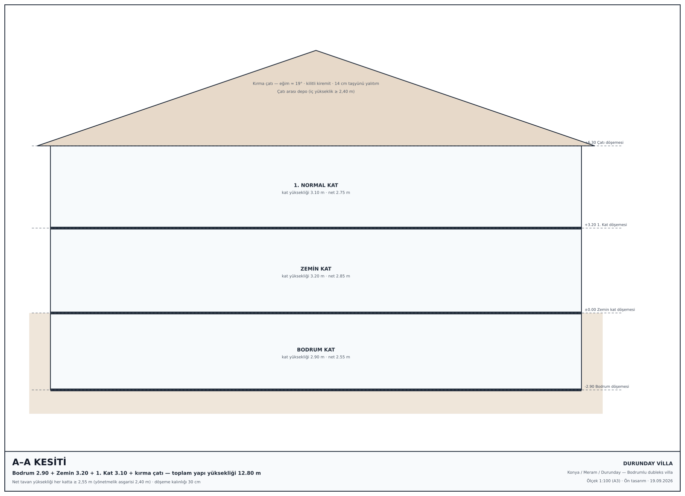

Çizimler
Ölçek 1:100 · ölçülendirilmiş · duvar kalınlıkları dış 35 cm, iç 15 cm. Her çizim SVG’dir; büyütmek için üzerine tıklayabilirsiniz.






Ölçek 1:100 · ölçülendirilmiş · duvar kalınlıkları dış 35 cm, iç 15 cm. Her çizim SVG’dir; büyütmek için üzerine tıklayabilirsiniz.





